Autores: F.J. Valencia, J. Santiago, R.I. González, R. González-Arrabal, C. Ruestes, M. Pérez Díaz, M.A. Monclús, J. Molina-Aldareguia, P. Díaz Núñez, F. Muñoz, M. Kiwi, J.M. Perlado, E.M. Bringa (et al.)
Revista: Acta Materialia 203 (2021) 116485, DOI: 10.1016/j.actamat.2020.116485
🎯 Idea central
Entender, a escala atómica, cómo se deforma plásticamente el carbono amorfo (aC) —en particular el diamond-like carbon (DLC) sin hidrógeno— durante la nanoindentación, y cómo sus propiedades mecánicas dependen del contenido de enlaces sp³. Para ello combinan tres frentes: experimentos de nanoindentación, simulaciones ab-initio (DFT) y dinámica molecular clásica (MD). El resultado es una descripción completa y validada que revela mecanismos de plasticidad inesperados que no se detectan con las técnicas experimentales habituales.
🔬 El material: aC / DLC y el papel del sp³
- El carbono hibrida de tres formas: sp¹ (lineal), sp² (trigonal, tipo grafito) y sp³ (tetraédrico, tipo diamante).
- El DLC es un carbono amorfo metaestable con una fracción importante de enlaces sp³, lo que le da propiedades cercanas al diamante: alta dureza, bajo coeficiente de fricción, resistencia al desgaste, transparencia óptica e inercia química.
- Se acepta que las propiedades mecánicas del DLC sin hidrógeno están controladas principalmente por el %sp³. El problema: como el aC carece de orden de largo alcance, los mecanismos de deformación plástica son difíciles de predecir y técnicas como Raman o EELS no resuelven los cambios locales bajo el indentador.
⚙️ Metodología
Simulaciones
- MD clásica con LAMMPS y el potencial EDIP (Environment-Dependent Interatomic Potential), que reproduce bien la densidad y el %sp³ del aC frente a experimentos y DFT.
- Muestras de ~medio millón de átomos con 10, 15, 20, 25, 30, 40 y 55 % de sp³, generadas por temple térmico (fundido a 5000 K y enfriado rápido a 300 K).
- Indentador esférico de 2.5 nm de radio, penetración de 2 nm a 10 m/s. Módulo elástico vía Oliver-Pharr; área de contacto (y dureza) con la malla de superficie de OVITO.
- DFT (VASP, PAW, PBE) sobre muestras de 216 átomos para validar la hibridación de las muestras simuladas.
Experimentos
- Cuatro recubrimientos de aC (~1 µm) sobre Si(100): aC1, aC2, aC3 por magnetron sputtering (MS, variando el bias del sustrato) y aC4 por pulsed laser deposition (PLD).
- Caracterización estructural con Raman (bandas D y G) y EELS (relación 1s→π* / 1s→σ*); nanoindentación con punta Berkovich y método de Oliver & Pharr.
| Muestra | Depósito | sp³ % | H (GPa) | E (GPa) |
|---|---|---|---|---|
| aC-1 | MS | 20 | 16.6 | 159 |
| aC-2 | MS | 30 | 26.6 | 210 |
| aC-3 | MS | 35 | 29.1 | 236 |
| aC-4 | PLD | 55 | 40.2 | 274 |
📊 Resultados clave
Validación cruzada DFT ↔ EDIP
EDIP y DFT coinciden muy bien en el %sp³ en el rango de densidades 1.75–2.75 g/cm³ (hibridación de 10 a 40 %). El acuerdo en sp³ es excelente en todo el rango.
El módulo elástico y la dureza crecen con el sp³
- Tanto experimentos como MD muestran que E y H aumentan de forma continua con el %sp³ (de ~10 a 55 %), con excelente acuerdo entre ambos para el módulo elástico.
- E sigue el modelo de He y Thorpe para redes de aC: crece como ley de potencia con la coordinación promedio, E ∝ k(⟨r⟩ − r_p)^m, con r_p = 2.4 y exponente m = 1.7.
- Aparece un rol inesperado del sp¹ por debajo de 20 % de sp³, que los autores atribuyen a un artefacto del potencial EDIP.
Dos modos de plasticidad según el sp³
- sp³ < 40 %: plasticidad mediada por la transición sp² → sp³ cerca de la punta (plasticidad "química", inducida por la presión de contacto ≈ 20 GPa).
- sp³ alto (~55 %): enlaces saturados; apenas hay cambio de hibridación (incluso a ~100 GPa). La deformación se atribuye a densificación por reordenamiento de enlaces y compactación de porosidad.
Patrones de corte altamente anisotrópicos
- Las distribuciones de shear strain son muy anisotrópicas, en contradicción con las predicciones continuas (hemisféricas) para un indentador esférico en un sólido amorfo.
- A bajo sp³ la respuesta de corte se extiende mucho más allá del contacto; a alto sp³ se concentra junto a la punta.
- Aparecen filamentos y patrones tipo anillo, distintos de las bandas de corte de los vidrios metálicos y de los vidrios de sílice. No hay grietas, bandas de corte ni dislocaciones a esta escala.
Resistencia al desgaste
La figura de mérito H³/E² crece con el sp³: mejor capacidad de acomodar deflexiones del sustrato y disipar energía bajo carga → mayor resistencia al desgaste sin agrietamiento.
🧩 Por qué importa
- Da una descripción cuantitativa y validada (experimento + DFT + MD) de cómo el %sp³ gobierna E, H y la plasticidad del DLC, recubrimiento clave en herramientas de corte, discos duros, MEMS, motores y biomedicina.
- Usa la MD como "microscopía computacional in-situ": revela la física bajo el indentador (transición sp²→sp³, anisotropía del corte) que Raman o EELS no pueden ver.
- Los resultados sirven para refinar modelos continuos de mesoescala y diseñar mejores recubrimientos superlubricantes.
⚠️ Limitaciones
- Diferencias de escala espacial y temporal entre MD (decenas de nm, ns, indentador esférico) y experimentos (µm, segundos, punta Berkovich): la dureza simulada tiende a ser mayor que la experimental.
- El exceso de sp¹ a bajo sp³ parece un artefacto del potencial EDIP, sin contraparte experimental.
- Las simulaciones exploran penetraciones pequeñas (2 nm); la conexión con el agrietamiento y la fractura a mayores deformaciones queda como trabajo futuro.
📎 Conexiones
- Metodológicamente cercano a otros trabajos del grupo de Ruestes/Bringa sobre nanoindentación atomística y comparación MD ↔ experimento.
- Comparte la filosofía "atomístico → propiedades macroscópicas" con [[CNN3D_constantes_elasticas_nanoporosos_Zorkaltsev_2025]] y [[Thermal_transport_atomistico_continuo_Ugwumadu_2026]], aunque aquí el puente es experimento + DFT + MD en vez de surrogates de IA.
- El uso de OVITO para el área de contacto y el análisis de coordinación lo emparenta con el análisis estructural de [[Steinhardt_bond_orientational_order_1983]].
Figuras del Paper (13)
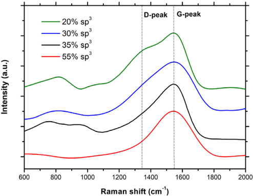
Fig. 1. Espectros Raman medidos para muestras de DLC con distinto contenido de sp³: 20 % (verde), 30 % (azul), 35 % (negro) y 55 % (rojo).
La banda G (~1540 cm⁻¹, estiramiento C–C en sitios sp²) y la banda D (~1340 cm⁻¹, modo de respiración de anillos sp²) dominan el espectro. El cociente I_D/I_G y el corrimiento de G hacia números de onda mayores crecen con el sp³, lo que permite seguir la transición aC → ta-C del modelo de tres etapas de Ferrari.
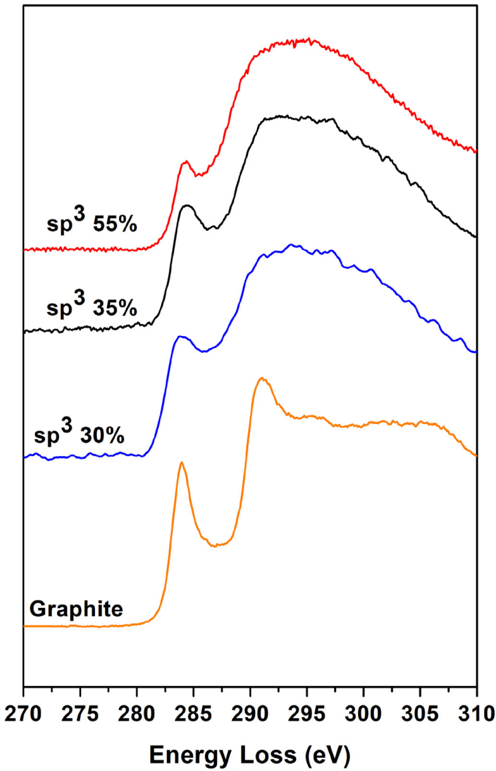
Fig. 2. Espectros EELS medidos para muestras de DLC con distinto contenido de sp³: 20 % (verde), 30 % (azul), 35 % (negro) y 55 % (rojo). Se incluye, a modo de comparación, el espectro EELS de una muestra de grafito (naranja).
Las dos señales características —1s→π* a 284 eV y 1s→σ* a ~291 eV— permiten cuantificar la fracción sp² con la fórmula de Ferrari, tomando el grafito (100 % sp²) como referencia. Es la medida experimental directa del %sp³ de cada recubrimiento.
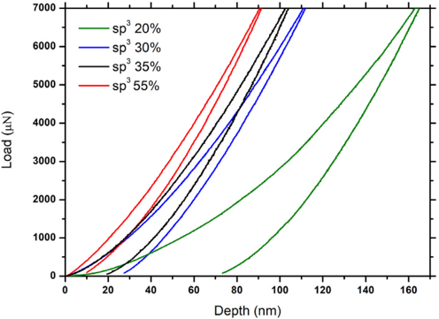
Fig. 3. Curvas experimentales de carga-profundidad de nanoindentación para muestras de DLC con distinto contenido de sp³: 20 % (verde), 30 % (azul), 35 % (negro) y 55 % (rojo).
Ensayos controlados por carga (Berkovich, Oliver-Pharr). Una pendiente de descarga más pronunciada implica mayor módulo elástico; un desplazamiento de la curva hacia la izquierda (menos penetración para la misma carga) implica mayor dureza. Ambas crecen con el sp³.
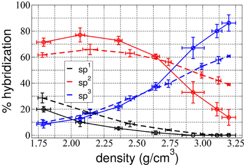
Fig. 4. Porcentaje de hibridación (sp¹, sp² y sp³) de muestras de 256 átomos generadas con DFT y con EDIP.
Validación cruzada del potencial clásico. EDIP y DFT coinciden muy bien en el sp³ en el rango de densidades 1.75–2.75 g/cm³ (10–40 % sp³). A bajo sp³, EDIP subestima el sp² y sobreestima el sp¹ (probable artefacto del potencial).
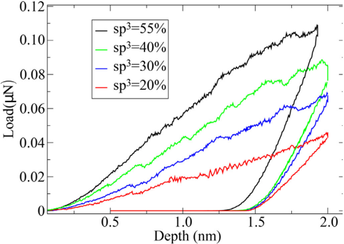
Fig. 5. Curvas de carga frente a profundidad del indentador (MD) para DLC con 20, 30 y 55 % de sp³.
Versión simulada del ensayo, controlada por desplazamiento. A mayor sp³, mayor pendiente elástica y mayor fuerza para una profundidad dada (mayor dureza). El DLC no nuclea bandas de corte lejos de la punta, a diferencia del grafito o el diamante.
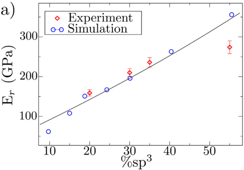
Fig. 6(a). Módulo elástico para distintos %sp³; los símbolos rojos son experimentos y los azules, simulaciones. La línea es el ajuste E = 478.5·[0.248 + sp³]^(3/2).
Acuerdo excelente experimento-simulación. El módulo crece de forma monótona con el sp³, con un cambio de pendiente cerca del 20 % de sp³. Para sp³ > 20 %, los datos calculados y medidos siguen el mismo ajuste.
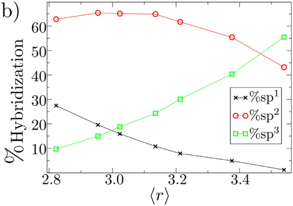
Fig. 6(b). Hibridación (sp¹, sp², sp³) en función de la coordinación promedio ⟨r⟩ de cada muestra indentada con MD.
El sp² se mantiene casi constante (~60 %) a bajo sp³; el aumento de rigidez se debe a la caída del sp¹ y el aumento del sp³. Es decir, una transición de un aC blando tipo polimérico (mucho sp¹) hacia una red rígida sobre-restringida (ta-C).
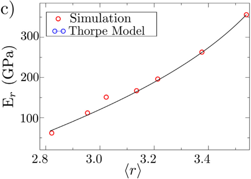
Fig. 6(c). Módulo elástico frente a coordinación promedio ⟨r⟩. La línea es el mejor ajuste con el modelo de He y Thorpe, E_r = k(⟨r⟩ − r_p)^m, con r_p = 2.4, k = 280.3 GPa y m = 1.7.
La rigidez sigue una ley de potencia con la coordinación, con la transición floppy→rígido en ⟨r⟩ = 2.4. El exponente m = 1.7 (algo mayor que el 1.5 clásico) refleja que el DLC es una red totalmente aleatoria. La extrapolación da ~600 GPa para una red 100 % sp³.
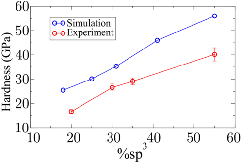
Fig. 7. Dureza MD a máxima penetración frente al %sp³. Se incluyen también los resultados experimentales.
Usando el área de contacto atomística de OVITO (más realista que el área geométrica), la dureza simulada se acerca a la experimental y sigue la misma tendencia creciente con el sp³. El área geométrica sobreestimaría el contacto y daría durezas demasiado bajas.
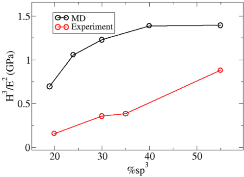
Fig. 8. Figura de mérito H³/E² frente al contenido de sp³, para experimentos y simulaciones.
H³/E² —indicador de resistencia a la falla por deformación elástica y al desgaste— crece con el sp³: las muestras con más sp³ acomodan mejor las deflexiones del sustrato y disipan más energía bajo carga. Los valores algo mayores en simulación provienen de las durezas MD más altas.
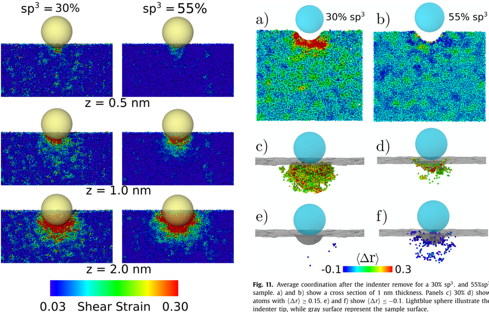
Fig. 9 (izquierda). Indentación de distintas muestras de DLC; cada imagen es un corte transversal (medio) y el color indica la deformación de corte de cada átomo. — Fig. 11 (derecha). Coordinación promedio tras retirar el indentador para 30 % y 55 % sp³: (a, b) sección de 1 nm; (c) 30 % y (d) átomos con Δ⟨r⟩ ≥ 0.15; (e, f) átomos con Δ⟨r⟩ ≤ −0.1. La esfera celeste es la punta; la superficie gris, la muestra.
A bajo sp³ (izq.) el corte se propaga lejos de la punta; a 55 % se concentra justo bajo ella, por la rigidez del armazón tetraédrico. Tras retirar la punta (der.), la muestra de 30 % tiende a aumentar su coordinación (sp²→sp³), mientras que en la de 55 % la creación y destrucción de enlaces se compensa: casi no cambia la coordinación global. Nota: el extractor fusionó las Figs. 9 y 11 en una sola imagen.
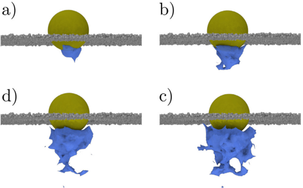
Fig. 10. Superficie de deformación de corte alrededor de los átomos con shear strain > 0.3 para una muestra de aC con sp³ = 30 %. (a, b, c, d) corresponden a profundidades del indentador de 0.5, 1.0, 1.5 y 2.0 nm. Los átomos grises son la superficie del DLC.
Aunque se esperaría un volumen de corte hemisférico (isótropo) en un amorfo, ya a 0.5 nm la región es irregular y, a mayor profundidad, aparecen filamentos y patrones tipo anillo. Esta anisotropía, atribuida a la densidad irregular del aC, es muy distinta de los vidrios metálicos (bandas de corte) o de sílice.
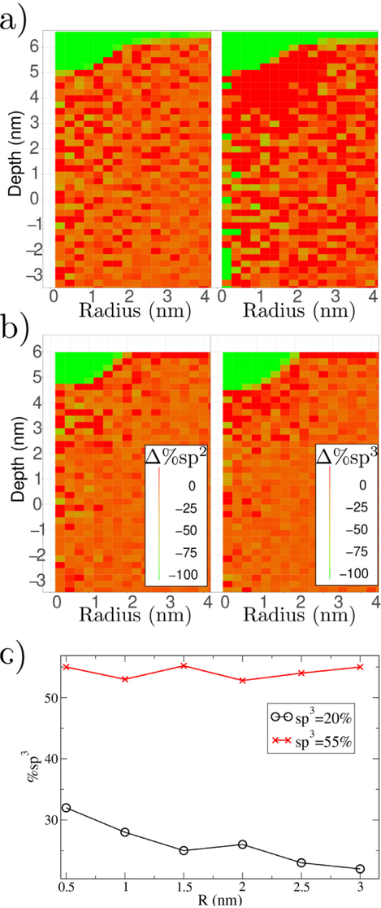
Fig. 12. Cambio de hibridación para distinta concentración de sp³. (a) Cambio porcentual respecto de una muestra no indentada con sp³ = 20 % (izq.: Δ%sp²; der.: Δ%sp³). (b) Cambio para una muestra de sp³ = 55 %. (c) sp³ en función de la distancia al indentador (a z = 2 nm; promedios en cascarones esféricos de 0.5 nm).
En la muestra de 20 %, el enlace sp³ supera el 30 % a 0.5 nm de la punta, y la transformación estructural alcanza hasta ~3 nm (disparada por ~20 GPa de presión de contacto). En la de 55 % no hay cambio de enlace aun a ~100 GPa: los enlaces ya están saturados, igual que ocurre en el DLC hidrogenado.